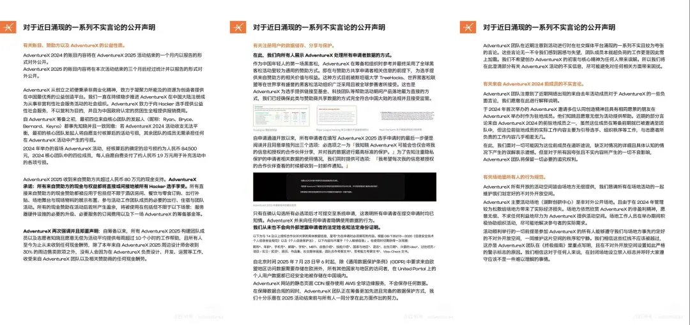
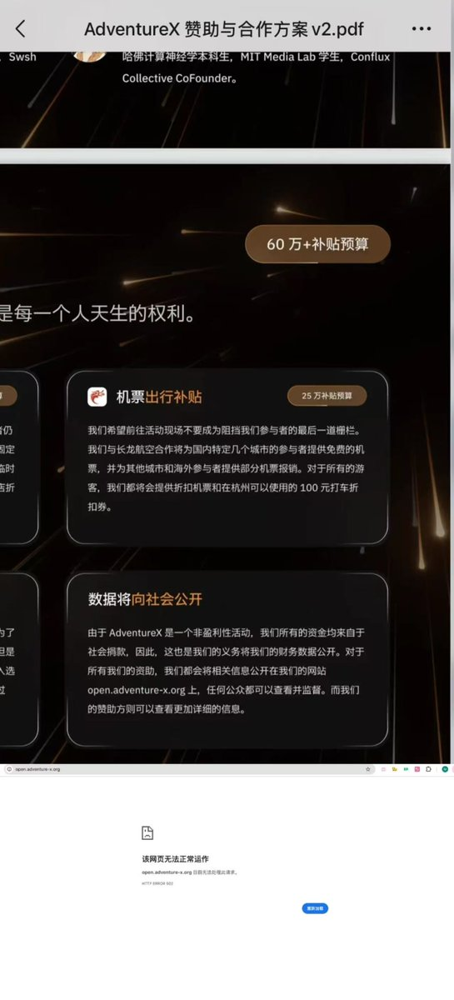
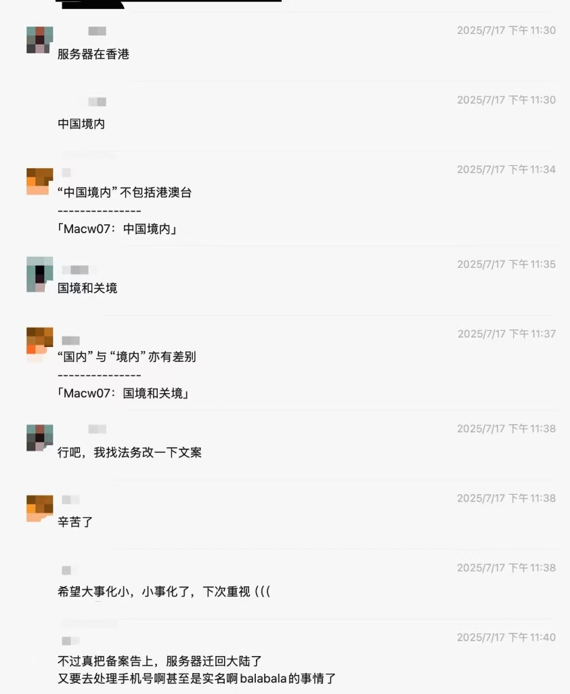
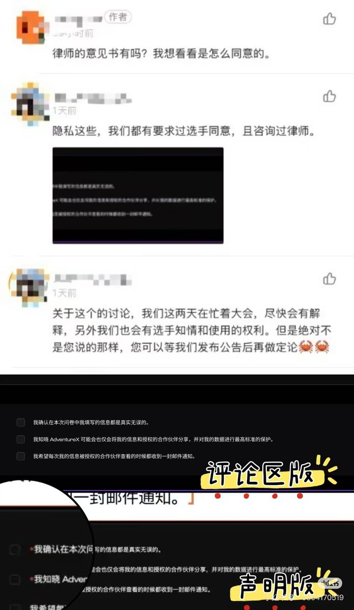

小虚空🍥
@tokerumaisurii
@Max939566737067 open dot adventure-x dot org cannot be opened lol




Max For AI
@Max939566737067
AdventureX的最新官方回应，充满着傲慢、谎言与背叛。
写在开头：
首先，我想对所有正在AdventureX 2025现场，心无旁骛投入比赛的选手们说一声：
请继续专注你们的旅程，终点线前的最后冲刺，值得你们倾尽全力。
这篇回应，并非意在打扰你们，而是为了厘清事实，问责于那些需要承担责任的人。 https://t.co/QEqm7OeD5i